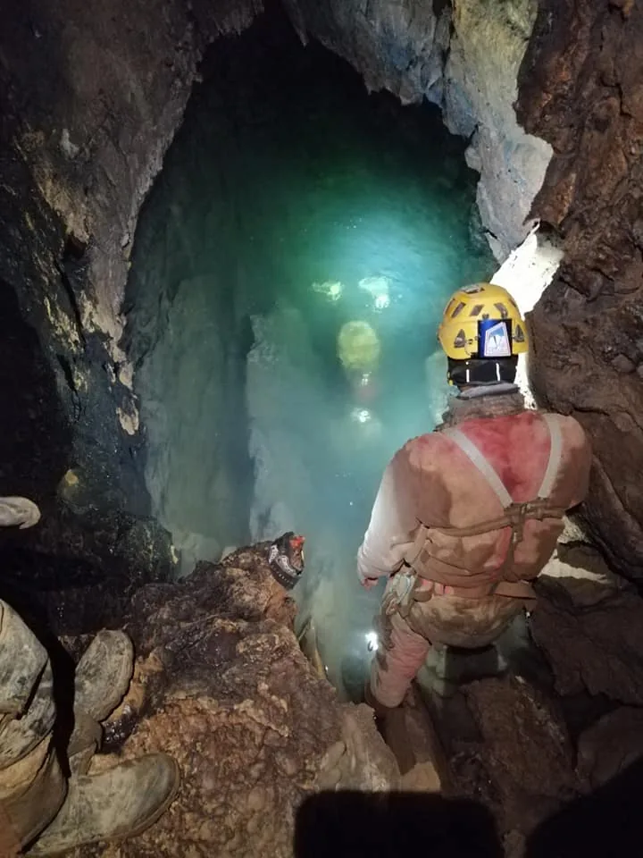

Ekspedicija Nedam 2021.
Ovogodišnja ekspedicija održat će se u razdoblju 17.07.-01.08.2021. na području NP Sjeverni Velebit. Primarni cilj ekspedicije je istraživanje iza sifona jame Nedam koji je preronjen tijekom prošlogodišnje ekspedicije.

Ovogodišnja ekspedicija održat će se u razdoblju 17.07.-01.08.2021. na području NP Sjeverni Velebit. Primarni cilj ekspedicije je istraživanje iza sifona jame Nedam koji je preronjen tijekom prošlogodišnje ekspedicije. Osim na dnu, radit će se i u višim neistraženim dijelovima jame Nedam. Istraživat će se i okolno područje što uključuje pretraživanje neistraženog terena, prikupljanje podataka koji nedostaju o već poznatim objektima te nastavak istraživanja u već poznatim objektima.
Glavni kamp bit će na Malom Lomu, dvije minute hoda od ceste u zavjetrini i hladu. Nedaleko od kampa nalazi se i tzv. Veliki Lom na kojem se nalazi bunar s tehničkom, nepitkom vodom.
Kotizacija iznosi 40 kuna za jedan dan, te 350 kuna za boravak u trajanju cijele ekspedicije.
U kotizaciju ulaze doručak, užina na terenu te kuhana večera.
OVDJE ISPUNITE PRIJAVNICU ZA EKSPEDICIJU:
https://forms.gle/fyz34aPNabiaMTee7
Za pitanja i nedoumice slobodno se obratite:
Valentina Plemenčić
+385 92 3471 988
procelnik.sov@gmail.com
-----------------------------------------------------------------------------------------
O prijašnjim istraživanjima jame Nedam:
* Završetak ekspedicije Nedam 2020
* Jama Nedam ide dalje
* Jama Nedam - nova hrvatska tisućica!
Jama Nedam, sifon na -1192 m.